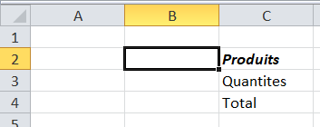
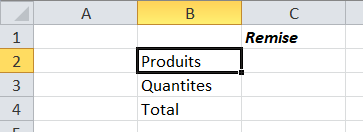

L’environnement de développement Visual Basic Editor
Exercices
Exercice 1
La macro
macro_mise_en_page qui vous avez enregistrée dans le
chapitre précédent (ex.2) doit avoir à peu près le code suivant :
Sub macro_mise_en_page()
ActiveCell.FormulaR1C1 = "Produits"
ActiveCell.Offset(1, 0).Range("A1").Select
ActiveCell.FormulaR1C1 = "Quantités"
ActiveCell.Offset(1, 0).Range("A1").Select
ActiveCell.FormulaR1C1 = "Total"
End Sub
L'instruction ActiveCell.Offset(1,0).Range("A1").Select sélectionne (Select) une cellule (Range) qui est sur une ligne en dessous et sur la même colonne (Offset(déplacement_ligne, déplacement_colonne)) que la cellule active (ActiveCell). L'instruction ActiveCell.Offset(1,0).Range("A1").Select peut être remplacée par l’instruction ActiveCell.Offset(1,0).Select.
Pour vous rendre compte de cela par vous-même, depuis l’éditeur VBA placez-vous sur la procédure macro_mise_en_page et appuyez sur la touche F8. La première ligne de la macro est surlignée en jaune. Si vous appuyez à nouveau sur F8, celle-ci est exécutée. Vous pouvez alors voir dans le classeur quels en ont été les effets. En procédant de même pour toutes les instructions produites découvrir leurs sens.
Exercice 2
Faire comme dans l’exercice précèdent pour tous les programmes enregistrés précédemment.
Exercice 3
Modifier la macro
macro_mise_en_page (
cf.
ex.2 chap.1) pour que "Produit" soit écrit en caractères gras et italiques, dans la cellule qui se trouve dans la colonne de droite et sur la même ligne que la cellule active comme dans l'exemple ci-dessous.

Servez-vous de l'enregistreur de macro pour connaître les instructions corresponsantes.
Hide
Sub macro_mise_en_pageModified1()
ActiveCell.Offset(0, 1).Range("A1").Select
ActiveCell.FormulaR1C1 = "Produits"
Selection.Font.Italic = True
Selection.Font.Bold = True
ActiveCell.Offset(1, 0).Range("A1").Select
ActiveCell.FormulaR1C1 = "Quantites"
ActiveCell.Offset(1, 0).Range("A1").Select
ActiveCell.FormulaR1C1 = "Total"
End Sub
Hide
Exercice 4
Modifier la macro
macro_mise_en_page (
cf.
ex.2 chap.1) pour que "Remise" soit écrit en caractères gras et italiques, dans la cellule qui se trouve dans la colonne de droite et sur la ligne juste au-dessus de celle de la cellule où est écrit "Produits" comme dans l'exemple ci-dessous.

Servez-vous de l'enregistreur de macro pour connaître les instructions corresponsantes.
Hide
Sub macro_mise_en_pageModified()
ActiveCell.FormulaR1C1 = "Produits"
ActiveCell.Offset(1, 0).Range("A1").Select
ActiveCell.FormulaR1C1 = "Quantites"
ActiveCell.Offset(1, 0).Range("A1").Select
ActiveCell.FormulaR1C1 = "Total"
ActiveCell.Offset(-3, 1).Range("A1").Select
ActiveCell.FormulaR1C1 = "Remise"
Selection.Font.Italic = True
Selection.Font.Bold = True
End Sub
Hide
Exercice 5
Ecrire une nouvelle macro nommée macro_mep_absolue qui réalise les mêmes instructions mais toujours à partir de la cellule A3.
Au début de la procédure, il faut sélectionner (.Select) la cellule (Range) A3 en tant que la cellule active.
Hide
Sub macro_mep_absolue()
Range("A3").Select
ActiveCell.FormulaR1C1 = "Produits"
ActiveCell.Offset(1, 0).Range("A1").Select
ActiveCell.FormulaR1C1 = "Quantites"
ActiveCell.Offset(1, 0).Range("A1").Select
ActiveCell.FormulaR1C1 = "Total"
ActiveCell.Offset(-3, 1).Range("A1").Select
ActiveCell.FormulaR1C1 = "Remise"
Selection.Font.Italic = True
Selection.Font.Bold = True
End Sub
Hide
Exercice 6
Ecrire une macro macro_cout qui permet de calculer le coût d’un achat (quantité*prix_unitaire) à partir des valeurs contenues dans les cellules A1 et B1 de la feuille courante. Le résultat sera écrit dans la cellule C1.
Il faut d'abord sélectionner la cellule C1 puis y insérer le calcul.
Hide
Sub macro_cout()
Range("C1").Select
ActiveCell.FormulaR1C1 = "= RC[-2] * RC[-1]"
End Sub
Hide
Félicitations, vous avez terminé les exercices de ce chapitre.
Vous pouvez passer au chapitre suivant en cliquant sur
ce lien ou sur la flèche droite en dessous. Vous pouvez également retourner sur le chapitre en cours en cliquant sur la flèche gauche.